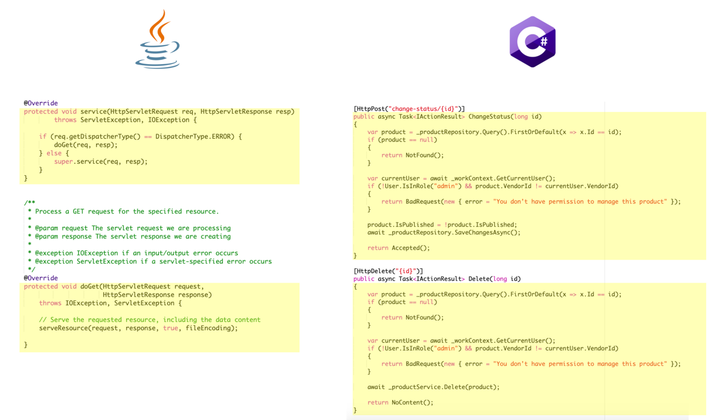
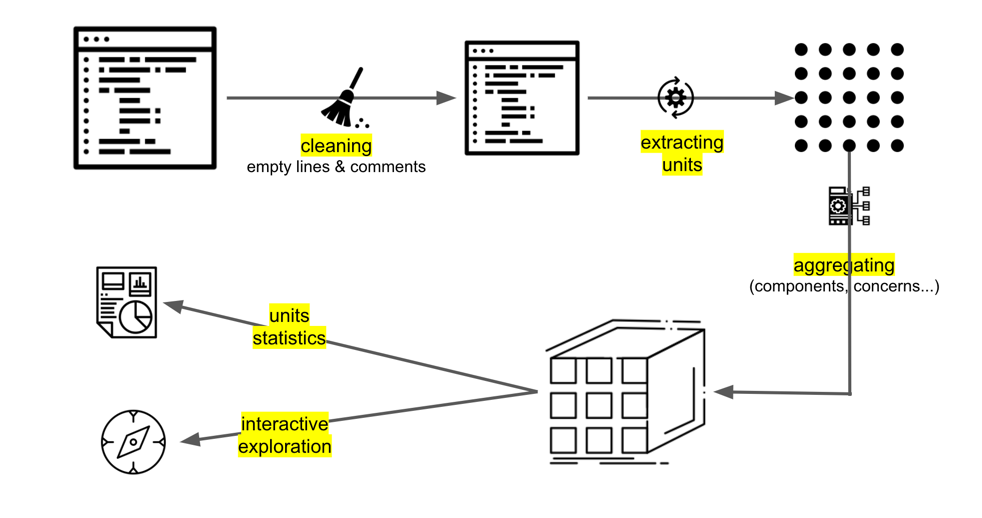
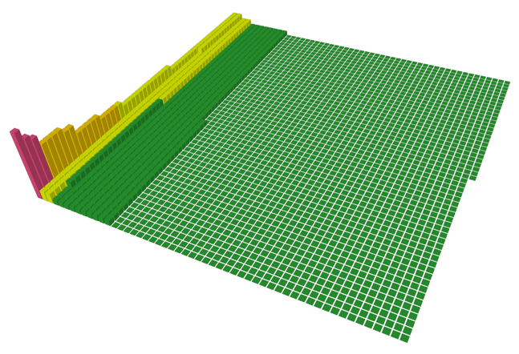
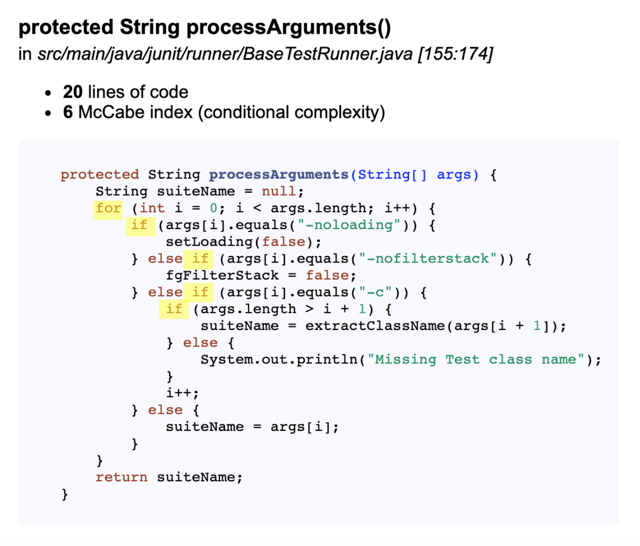
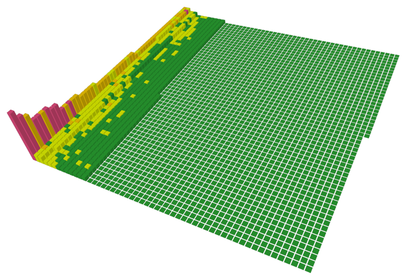

Unit-Level Measurements
Most of Sokrates’ analyses are at the level of a whole file. Sokrates also goes a level deeper, at a so-called unit level.
Depending on a language, a unit can be a method, function procedure. I normally define a unit as the smallest reusable piece of code. These pieces of code are frequently associated with unit tests. The following figure shows four units, two in Java, and two C#:

Figure 1: Examples of four units, two in a fragment from Java file and two in a fragment from a C# file.
Unit-Level Analysis
Sokrates extracts units from files in several steps. Firstly, Sokrates cleans each file’s content to eliminate comments, and other elements, such as long string constants, simplifying a follow-up parsing of code. After that, Sokrates applies a set of language-specific heuristics to identify start and end lines for each unit. You can look in Sokrates code at GitHub the exact details of unit extraction heuristics.

Figure 2: An overview of Sokrates’ unit processing. To simplify processing, Sokrates first cleans the code. Then Sokrates extract units and measures their size and conditional complexity. Sokrates further aggregates the duplicates, and presents the data in reports or in Sokrates Explorer.
Sokrates generates two reports with unit-level measurements: a unit size report and a conditional complexity report.
A Sokrates unit size report then answers the following questions:
- What is the overall unit size distributions?
- What is the unit size distributions per file type?
- What is the unit size distributions per component?
- What are the longest units?
An example of a unit size report you can find here.
A Sokrates unit size report then answers the following questions:
- What is the overall conditional complexity distribution?
- What is the conditional complexity distribution per file type?
- What is the conditional complexity distribution per component?
- What are the units with the highest conditional complexity?
An example of a conditional complexity report you can find here.
Unit Measurements
Sokrates measures two things about each unit:
- a unit’s size
- a units’ conditional complexity
Unit Size
The unit size represents the number of lines in each unit, excluding comments and empty lines, and including the start and end lines of a unit.
After counting lines, Sokrates then classifies units five categories based on their size (see Figure 3 for an example):
- very small units (1-10 lines of code)
- small units (11-20 lines of code)
- medium size units (21-50 lines of code)
- long units (51-100 lines of code) and
- very long (101+ lines of code)

Figure 3: A 3D view of all units color-coded by size category (from the Apache Commons-Lang unit size report). Each block is one unit. The height of the block represents the file unit size in lines of code. The color of the unit represents its unit size category (green=0-20, yellow=21-50, orange=51-100, red=101+).
Conditional Complexity
Sokrates measures the conditional complexity following the cyclomatic complexity method developed by Thomas J. McCabe, Sr. in 1976. In a nutshell, this method goes as follows:
- each unit has by default the McCabe index of one, as there is always at least one path through the unit.
- for every conditional statement found in the code (e.g., ifs, loops, switches), the number is increased by one.
For example, a unit with only one IF statement has a conditional complexity of two.
Figure 4 shows a more complex example, with conditional complexity value of six (one by default + one for statement + four if statements).

Figure 4: An example unit from the JUnit5 project.
After measuring card trend complexity, Sokrates then classifies units into five categories (see Figure 5 for an example):
- very simple units (1-5)
- simple units (6-10)
- medium couples units (11-25)
- couples units (26-50)
- very couples units (51+)

Figure 5: A 3D view of all units color-coded by conditional complexity (from the Apache Commons-Lang conditional complexity report). Each block is one unit. The height of the block represents the file unit size in lines of code. The color of the unit represents its conditional complexity category (green=0-5, yellow=6-10, orange=11-25, red=26+).
Heuristics for Units Extraction
Sokrates does not implement full feature lexers and parsers for language analyses. Instead, Sokrates applies simple, heuristic string manipulation techniques to identify and extract interesting code pieces, including units.
While each language has its specifics, we can group Sokrates heuristic techniques into two categories:
- a balanced brackets heuristic
- a proper formatting heuristic
Sokrates applies a balanced brackets heuristic for C- style languages, such as Java, C#, or JavaScript. In such languages, it is possible to identify the end line of a unit by only looking for a closing bracket, e.g.,”}”. Of course, you first need to identify the start marker of a unit. Sokrates identifies the stars of a unit by using language-specific regex-based rules. Sokrates then looks for the end bracket, taking onto account internal code blocks of code, e.g., loops, which may use the same start and end brackets as a unit. I call the method “balanced” as we need to find the closing bracket of a unit so that the total number of opening and closing brackets within the unit are equal, e.g., in balance. To simplify processing following the balanced brackets method, Sokrates also do additional preparations and code clearings, e.g., remove the content of string constants, as such content my contain closing brackets and opening brackets.
The unit extraction based on proper formatting heuristic assumes that developers or their IDEs have formatted the code according to usual coding standards. In particular, Sokrates assumes that lines of code in embedded blocks have more white spaces at the beginning of each line than the blocks in which they reside. For instance, in Visual Basic, if a file is formatted correctly, the start and end lines of functions and procedures (VB units) have the same whitespaces at the beginning of lines. The code within these functions and procedures, excluding empty lines and comments, should have more white spaces as the beginning of their lines. Once we know the unit’s start line, we can find the end line by merely looking for the first non-empty line with the same amount of leading whitespaces.
For concrete details, again, take a look at the Sokrates’ GitHub repository.
To Probe Further
To learn more about units, unit size, and conditional complexity, the Sokrates recommends the following resources:
- Clean Code: A Handbook of Agile Software Craftsmanship, by Robert Martin
- “The first rule of functions is that they should be small. The second rule of functions is that they should be smaller than that. Functions should not be 100 lines long. Functions should hardly ever be 20 lines long.”
- Coding Smells, codinghorror.com
- “All other things being equal, a shorter method is easier to read, easier to understand, and easier to troubleshoot. Refactor long methods into smaller methods if you can.”
- Function Length, MartinFowler.com
- “If you have to spend effort into looking at a fragment of code to figure out what it’s doing, then you should extract it into a function and name the function after that ‘what’.”
- Stack Overflow Discussion on Unit Size, stackoverflow.com
- “Use common sense, stick to small function sizes in most instances, but don’t be dogmatic about it if you have a genuinely good reason to make an unusually big function.”
- Simplifying Conditional Expressions, sourcemaking.com
- Cyclomatic Complexity, wikipedia.org